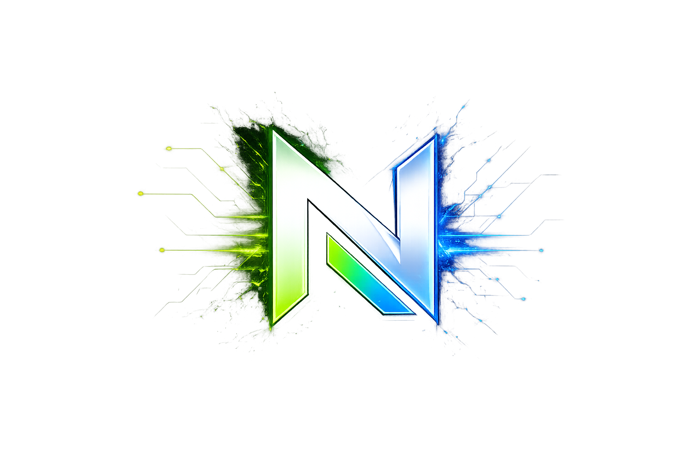

Jogos sustentáveis feitos com materiais recicláveis.
Transformar materiais recicláveis em jogos educativos, criativos e sustentáveis, promovendo aprendizado, diversão e consciência ambiental.
Thomas Oliveira
Durante o desenvolvimento da Nexus Infinity foram realizadas pesquisas, planejamento do projeto, coleta de materiais recicláveis, produção dos jogos, testes, ajustes e preparação da apresentação final.
O projeto foi concluído com sucesso, mostrando que materiais recicláveis podem ser transformados em jogos educativos de qualidade, unindo criatividade, sustentabilidade e diversão.